MAX Layout Environment Tutorial |
Part 2
Simple Layout
- OK, let's get started on some layout.
- The
UNNAMEDat the top of your MAX window should now sayfoo. This means that you are now editing the cellfoo. When you save it out it will be saved asfoo.max. Also, notice thatfoonow appears in theCell List Boxon the right side of the MAX window.
Using Gcells
- While MAX can do very low level full custom layout, it also has a complete Tcl/Tk interpreter built in. Tcl is a language developed by John K. Ousterhout at UC Berkeley. Tk is the windowing tool kit. Books on both can be found at your local bookstore. The Tcl/Tk interface in MAX allows full access to MAX layout functionality, providing unprecedented power and flexibility.
- A gcell is a cell generator written in the Tcl/Tk language. The gcell generates layout for a cell automatically from "properties" that you specify using a simple menu interface. MAX comes with gcells to generate FETs and Vias.
Figure 4: FET Gcell
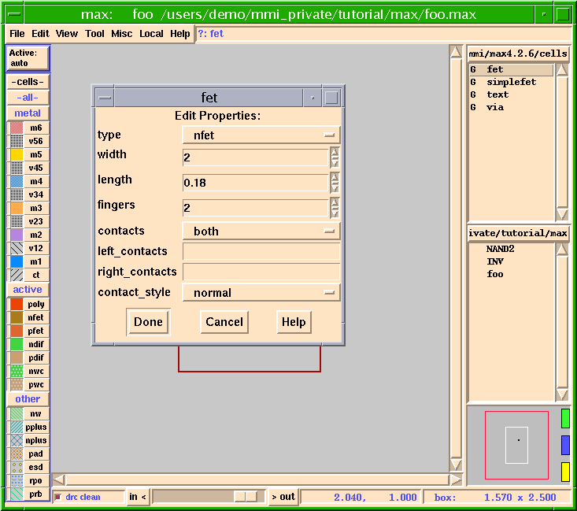
- When you click the left mouse button (Button-1) on
fetin theList Box, thefet generator windowwill pop up. It should look something like Figure 4.
Contactsallows you to put contacts on the left side, the right side, both sides, between the devices (all), or no contacts at all. Click onHelpor refer to the Micro Magic Tools MAX User Guide for more details.
- If you click the left mouse button (Button-1) on the word
bothit will change to the next option. Clicking the left mouse button (Button-1) on the little bar to the right of this option will bring up all of the possible options.
- Two nfets merged (stacked) together should appear, attached to the upper-right corner of the cursor.
- Your screen should now look like Figure 5.
Figure 5: Generated nfet Gcell
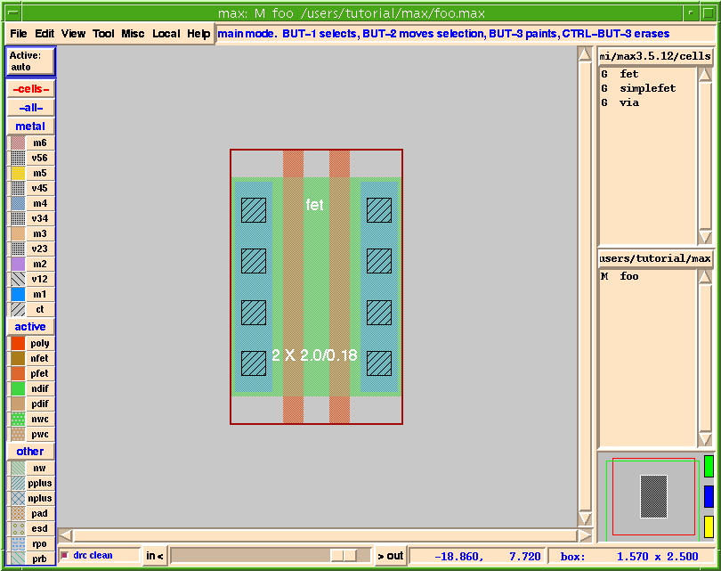
- The white text on the cell tells you that you are editing a fet (label at top), and that it is 2 gates x 2 microns wide, at a .18 micron channel length.
- Notice that the letter
Mappears to the left offooin theCell List Box. This tells you thatfoohas been Modified.
Zooming
- There are several methods for zooming found in the
Viewmenu.
- One easy way to zoom to the exact region you want is by using the zoom hotkey.
- One often-used technique for zooming is to use the j hotkey to zoom in by a factor of two centered on the mouse. The hotkey Shift-z can be used to zoom out by a factor of two.
Selecting and Moving Layout
- There are two types of layout you can select and move in MAX: objects and paint.
- Objects may be sub-cells (cells), generated cells (gcells) or polygons.
- Paint is basically flat layout. Think of paint as if you were painting something with a paintbrush. You can apply paint, remove paint, you can even stretch and drag paint. Paint is similar to flattened objects in other layout editors, but more flexible.
- There are many methods for selecting objects and paint.
- When MAX is in main mode (the default), if you simply drag out a region while holding down the left mouse button (Button-1), whatever is within the box will be selected when you release the button and will be highlighted in white.
- Once you have selected an object or paint you can do lots of things with it.
- You can also select objects or paint by clicking on them.
- Clicking the left mouse button on a piece of paint selects that particular rectangle of paint.
- Clicking on a cell, gcell or polygon will select the object.
- When there are multiple layers under the mouse cursor, clicking more than once will select each thing in turn. You can keep clicking until the one you want is selected. The
Probecommand (Shift-Button-1) opens a popup window showing everything underneath the cursor.
- MAX also supports
Cut,Copy, andPastein the same format you would see on any good Mac- or PC-based drawing or painting program.
Duplicating gcells
- We now wish to create a couple of pfets. We could go back to the List box and select the fet generator again, but there is another way.
- Notice that when you selected the fet and held down the middle mouse button (Button-2) the cursor changed to a 4-way arrow. This change in the cursor tells you that you are in a mode other than
main mode. In this case you are inmove mode.
- Now you will begin to see the true power of gcells.
Figure 6: Edit Properties Form For fet Gcell
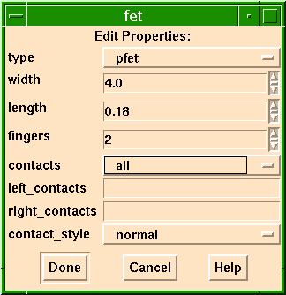
Stretching gcells
- As you have seen, gcells can be used to create fets and vias. The wiring tool can also automatically drop gcell vias. You can change the size of a gcell fet by:
- Using the
ehotkey, and accessing theEdit Propertiesbox, or
- Doing an
Edit Cell or Object In Placefrom theViewmenu (hotkey: Shift-e). Place the mouse near the bottom (or top) of the fets, and the cursor will change into a double-headed `stretch arrow'. Holding down the middle mouse button (Button-2), drag up or down to stretch the fet.
- Try this on your pfet:
Aligning objects
- It would be nice if our new fets were lined up. One way to align objects is to draw a ruler (hotkey: Control-r), zoom way in, and carefully move the objects until they are aligned with the ruler. But a much easier way is to use the
Align Objectscommand.
- First, select all the objects to be aligned. One easy way to select multiple objects is to hold down the Shift key while clicking on them with the left mouse button (Shift-Button-1.) The Shift-Button-1 means "add or subtract something under the mouse to/from the selection". If the gcell is selected, it will be deselected, and vice versa. You can tell when the gcell is selected because its outline is highlighted, and its name and size are also displayed in white.
- Second, you must place the box. By selecting the gcells with Shift-Button-1, the box has already automatically been placed over the last gcell you selected. The gcells will be moved so they align with the box, which, in this case, means that the first gcell you selected will be moved so it aligns with the second gcell you selected.
- Finally, use the
Align Objectscommand.
Continuous DRC
- We are now going to see a really powerful feature in MAX, real-time DRC.
- Now, either using the arrow keys (best for precise placement) or by holding down the middle mouse button (Button-2) and dragging, move the pfet just above the nfet as shown in Figure 7.
Figure 7: Real-time DRC
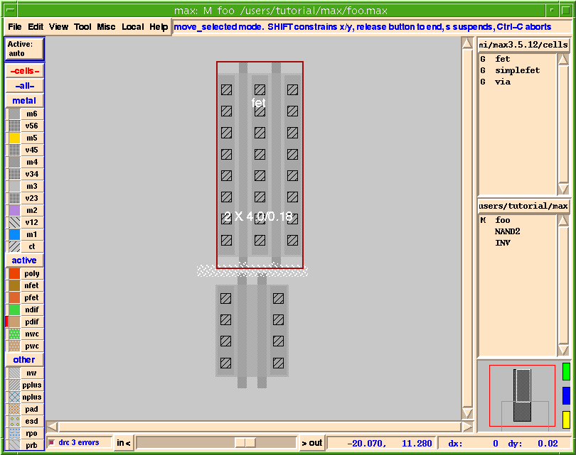
- If you move the pfet too close to the nfet, little white dots will appear. These little white dots tell you that there is a Design Rule Check error (DRC error).
- Notice that as you move the pfet closer or further away the DRC errors show up in "real" time! This is one of the powerful features in MAX.
- The Continuous DRC means you don't even have to learn the DRC rules, or count grids. Just move things closer together until you see the white dots, and then back off a little. The small DRC error box, to the left of the zoom bar, displays the number of errors.
- If you are curious about what the error represented by the white dots is, then you can draw a box around the white dots, type Shift-y or choose
Explain DRC under Boxfrom theMiscmenu. Look for the list of DRC errors in the MAX command window (the window from which you started MAX).
- We are going to use the
DRC Resultsform to view the DRC errors.
Figure 8: DRC Results Popup Form
- Click on
Next Errorto step through all of the DRC errors. Notice that each DRC error is highlighted in the layout, and the text of that DRC error is displayed in theDRC Feedbackwindow as well as the MAX Message Area.
- When you are finished looking at the DRC errors, click on
Closein theDRC Feedbackpopup window.
- Refer the the MAX User Guide for more details on the
DRC Resultspopup window. This window can also be used to view results of DRC runs with other tools, such as Cadence Calibre.
- For now, place the pfet above the left nfet so that the gates of the pfet and left nfet line up (this should be the case already after you aligned them). Then move the pfet up until it is DRC correct (no white dots) as shown in Figure 9.
Figure 9: FETs Lined Up
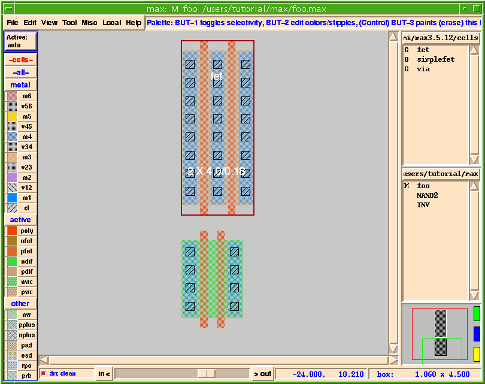
- The Continuous DRC feature uses design rules defined in the
MAX technology file. This single plain text file defines all the design rules needed by MAX's extensive DRC. The technology file uses a simple table format for most rules, resulting in a compact, easy to understand file format that can be as short as a single page. Micro Magic Tools provides common CMOS technology files as a starting point to build your own, or, you can build a prototype technology file automatically from an existing GDS file by choosingImport Filefrom theFilemenu. For further information, refer to Chapter 6: "MAX Technology Targeting" in the Micro Magic Tools MAX User Guide.
Wiring Mode
- Now you will route up the poly. You could route the poly by drawing rectangles and then filling them with poly (red) paint, but that's a lot of work. There's a much easier way - use MAX's built-in wiring tool.
- Notice the cursor has changed. Remember, that's to let you know you are in a different mode. In this case, you are in
wire mode.
- Now move the cursor up. A poly wire should follow the cursor, as shown in Figure 10. If the wire doesn't start in poly, check and make sure the Active layer is set to auto (the upper left corner of the MAX window).
Figure 10: Drawing A Wire
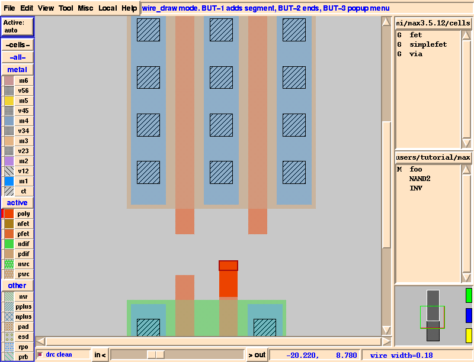
- As the pfet is not directly above the nfet we need a "kink" in the wire. You do this by simply clicking the left mouse button (Button-1) where you want the kink.
- In fact, MAX does even better than that. If you click the middle mouse button over the poly but are not exactly in the middle of the wire, MAX will actually snap the wire into place for you and end it. How about that?
- If you didn't put the wire exactly where you wanted it don't worry. You can always undo. While in wire mode, undo (u) will back up one segment at a time.
- You might have noticed that the little piece of poly you just added is a brighter color than the poly that was part of the gcell fets. This is a feature in MAX that is designed to help you know what you are editing. Paint or objects that you draw in the cell you are currently editing show up brighter than the cells you are not editing. This includes gcells. Thus, since you are not editing the gcell fets, they show up dimmer than the cell that you are editing. If you wish to have all of the layers show up the same brightness (even in the gcells or subcells) then go to the
Viewmenu, selectDisplay Options..., then selectDim Non-Edit Cellsand clickDone. The radio button should go "off" and the non-edit cells no longer dimmed.
Editing a Placed Wire
- Once a wire has been placed, you can edit the wire. The
Editmenu contains commands toMove,Stretch, andFillany painted layout, including wires.
- You may find that it is sometimes even faster to simply redo a wire if you need to make a number of edits.
- If you just want to move the wire a little you can select the wire segment you wish to move and then move it using the arrow keys. The arrow keys will do a "stretchy" move.
- Let's try a stretchy move with our connected fets.
- Draw a box by holding down and dragging Button-1 so that it encloses part or all of the pfet, and part of the vertical section of the poly wire, as shown in Figure 11.
Figure 11: Stretchy Move
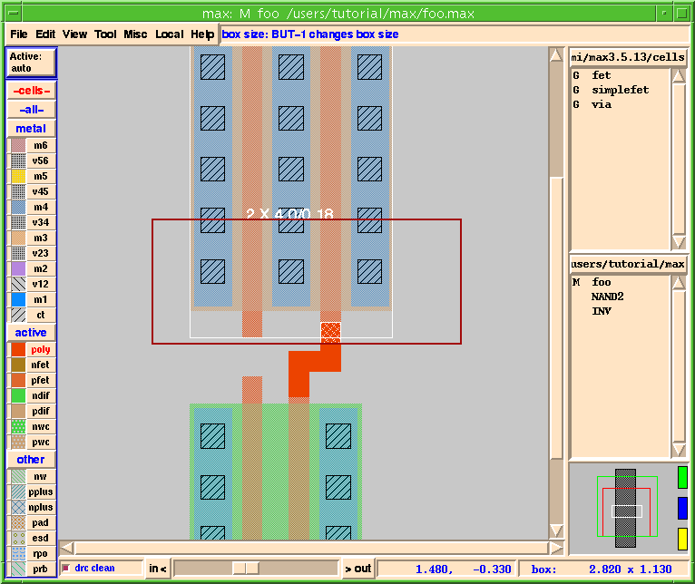
- Now let's move the middle segment of the poly wire.
- Select the horizontal section of the poly wire as shown in Figure 12. You will probably have to click twice with Button-1 over the middle segment in order to get the entire horizontal segment.
Figure 12: Moving Wire Segment
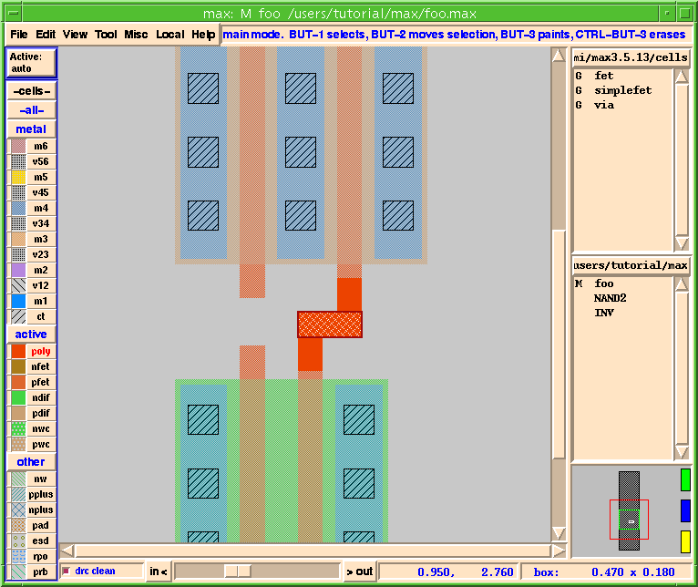
- Use the up and down arrow keys to move the segment. Notice that the wire stays connected.
- The
Fillcommand fills the area bounded by the box with whichever layers touch (or extend past) the edge of the box. The effect is to extend whichever layers touch one edge of the box all the way to the other edge of the box. Refer to the Micro Magic Tools MAX User Guide for more details.
- Now wire up the metal just as you did the poly.
- Get into
wire mode(hotkey: w) and then click on one of the contacts and draw the metal so it looks like Figure 13.
- Wire the left poly gates as shown in Figure 13.
Figure 13: Wired 2 Left Poly Gates
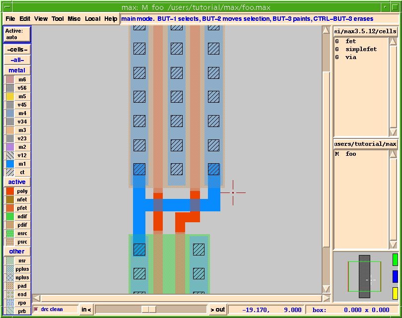
- When starting a new wire, the
ActiveLayerbox (remember it's on the top left just under theFilemenu) tells you what layer the wire (or circle or polygon) is going to be drawn in. If it is set to auto it picks the layer under the mouse.
- If you want to tell it exactly which layer to start drawing on, then hold down the left mouse button (Button-1) over the
ActiveLayerbox. When the popup appears simply place the mouse over the layer you want and then release the button.
- Since you have done a fair amount of work you should now save your layout.
Adding the Power Rails
- We are ready to put in the power rails. Let's say we were laying out this NAND gate for a standard cell library. Furthermore, assume that the power and ground rails are run in Metal 1 (M1) and that they are 2µm wide.
- We could use the wire tool to draw the power rails, by drawing wires with width set to 2um. To do this, you would start drawing a normal wire (hotkey: w) in layer M1, positioned above or below the fets. Then, press the right mouse button (Button-3) to access a popup menu for wiring options, including the current wire width. Here you can set the wire width of the current wire segment(s) to 2um, or whatever width you want.
- You can also set the default width, spacing, and snap grid for each wire layer in the
Wiring Parametersmenu. It is found underUser Preferencesin theFilemenu, then chooseWire Setup...(or just use the Shift-w hotkey), then chooseWiring Parameters.
- But this is a good opportunity to use paint directly. MAX has excellent capabilities for low-level layout "rectangle hacking", and this is an ideal way to put in the power rails. To use paint effectively in MAX, we will first have to learn to manipulate the Box and use the Palette.
The Box
- The Box is important in MAX because it is used by many commands to determine where you are going to place, or do, something. For painting, the Box marks the region where paint is going to be drawn or erased. We have already seen the Box on the screen while doing the commands above; for example, the
Align Objectscommand.
- You can create a box by simply holding down the left mouse button (Button-1) and dragging the outline about a region.
- Assuming you were in
main mode(the default), any paint within the box is selected. This is the way we have done things thus far.
- You can also position the box exactly by typing Shift-b, or selecting
Box Dimensionsfrom theMiscmenu, or by clicking on theBox Sizewindow in the lower right corner of the display. Any of these will show a menu that allows you to precisely set the box size.
Box Mode
Box Modeis useful when you need to do detailed layout. You can resize the box to the exact size you want, and place it exactly where you want it, without having to worry about corrupting any existing paint that you might have inadvertently selected.
- After typing b, (or
Make Boxin theMiscmenu) you can do any of the following:
- You can specify a new box position by holding down the left mouse button (Button-1) as you drag out a region, then release Button-1.
- Resize the existing box by moving the mouse over the sides or corners of the existing box until the cursor icon changes (to either a `stretch-arrow' or a `corner'), then drag that side or corner by pressing and holding the left mouse button (Button-1.)
- Move the box by holding down the middle mouse button (Button-2) and moving the mouse.
The Palette
- A few more words about the Smart Palette. Remember, down the left side of the window is the Smart Palette.
- The Smart Palette provides many features. It allows you to control what you can see, what you can select, what's under the cursor, what you can paint, and what the layers look like. Remember the
MAX Message Area(directly to the right of theHelpmenu) will tell you what the available options are if you place the mouse over the palette.
- To control which layers are visible, click the left mouse button (Button-1) over the little colored square. To control visibility by group, click the left mouse button (Button-1) on the group button (i.e. metal, active, etc.). This is a very useful feature for reducing clutter when you are working on a subset of the layers.
- To control which layers are selectable, click the left mouse button (Button-1) over the layer name (such as m2, v12, pfet, and so on). The button with the layer name will turn grey when that layer can NOT be selected. Or click the right mouse button (Button-3) over the group button to toggle selectability for the entire group.
- To paint layers, click the right mouse button (Button-3) on either the text or the little paint square for the layer you wish to paint. This will put that layer in the region specified by the Box.
- Layers which are under the mouse are indicated by the little red rectangular LED's just to the left of the colored boxes.
- Layers which are currently selected are indicated by the layer name changing from black to red.
- Finally, you can change the color or stipple patterns of any of the layers by clicking the middle mouse button (Button-2) over either the colored box or the layer name. This brings up the
MAX Color/Stipple Editor. Using the editor, you can even change the colors of things like the background (for example, make it black), the grid, labels, etc.
- While the grid color is changed in the
Color/Stipple Editor, the grid size and style are changed inGrid Setup...underUser Preferencesin theFilemenu, or by typing the Shift-g hotkey.
- You can also paint by clicking the right mouse button (Button-3) over any existing paint of the type you wish to paint with. That is, you can click the right mouse button (Button-3) over an existing piece of poly in the layout window and it will paint with that layer just as if you clicked on that layer in the palette.
- Note, however, that if you click over a place with NO layout then the area under the box will be erased.
- Remember,
Undo(hotkey: u) can recover from this.
Painting the Power Rails
- Now we are ready to add the power rails as paint rectangles.
- Hold down the left mouse button (Button-1) and drag out a region where you want to paint the new Vdd power rail as shown in Figure 14.
Figure 14: Drawing a Box for Painting Power Rails
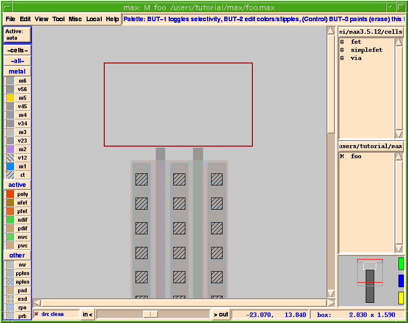
- If the box isn't the size you want it (see the lower right corner for the box size) you can make the box exactly 2µm tall.
- To make the box an exact size type Shift-b, or select
Box Dimensionsfrom theMiscmenu. A popup menu as shown in Figure 15 appears.Figure 15: Box Dimensions Popup Form
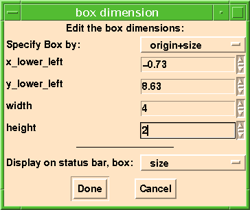
- Remember you can always resize or move the box as previously described in the section on The Box.
- You can change the size of a paint region by stretching an edge of any width using the
Edit Rectangle Edgecommand found in theEditmenu (hotkey: a).
- Simply type a. The cursor changes to let you know you are in
Edit Edgemode. Now move the finger over the edge you wish to stretch. A little select box will show you which edge you are over.- Once you have the edge you want, hold down the left mouse button (Button-1) and move the mouse in the direction you wish to stretch the edge. Release the button when the edge is where you want it.
- You can also change the size of a paint rectangle by first selecting it, and then selecting
Edit Propertiesfrom theEditmenu (Hotkey: p).
- Once you have painted the top power line you can simply duplicate the top power line and move it down.
- Duplicate the top power line (hotkey: d) and move it down as shown in Figure 16.
Figure 16: Nand Wired to Power Raill
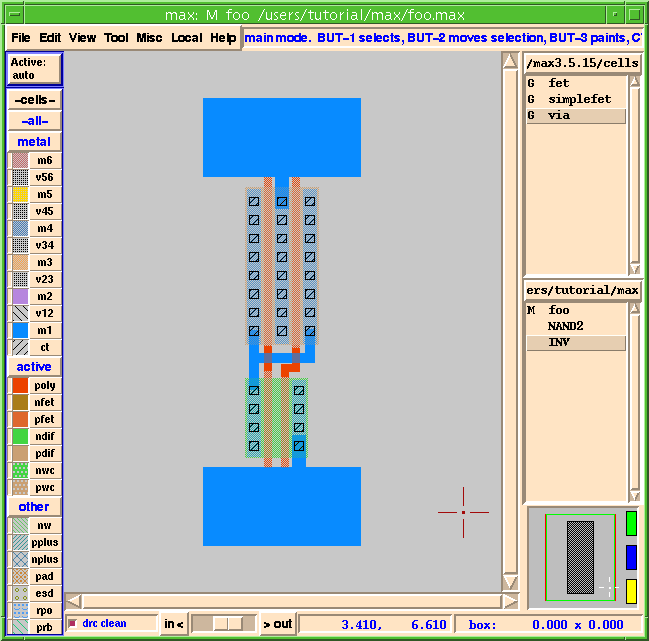
- Now that you have painted in your power and ground rails you should wire them up using the
Wiring Modeas before.
- After you have entered the
Wire Mode(w), hold down the Shift key and click the left mouse button (Button-1) over the middle of the pfet contact region. This will start a M1 wire with the width of the M1 under the cursor. By holding down the Shift key you are telling the wire tool to use the width of the wire under the cursor and NOT the minimum wire width. Connect it to the power rail.
- Your cell should now look like Figure 16.
Wiring Mode - Changing Layers
- Notice that the inputs and outputs are all found within the power straps. What if they need to be brought out so a router can get to them?
- Let's assume the router requires all signals to be at the top of the cell and in M1. You need to route the poly wires over the M1 power straps and then change to M1.
Wire Modein MAX can make this job easier since it can change layers for you.
- Notice that the contact tracks the vertical location of the mouse for you. Also notice that the DRC is working while you are moving the contact. Whenever you get too close to the M1 Vdd line, the little white DRC dots appear, as you can see in Figure 17.
Figure 17: Active DRC Showing Errors As Wire Is Drawn.
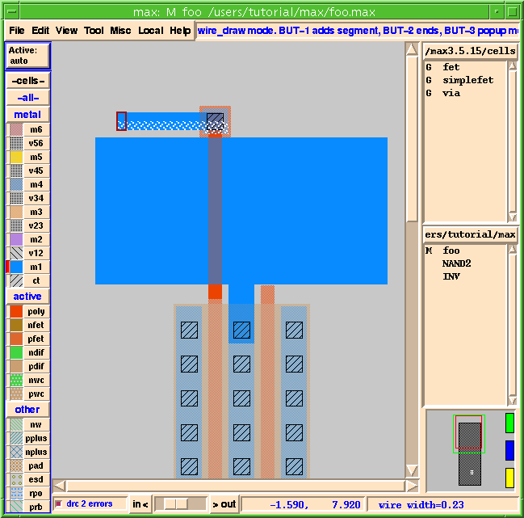
- As you continue dragging the mouse upward notice that you are now in M1. If you hit d (drop a contact) again, you will add a via1 and automatically change to M2, and so on until your technology runs out of metal layers.
- The generic technology file we have included (mmi18) has six layers of metal.
- End the wire by clicking the middle mouse button (Button-2) at the desired location, as shown in Figure 17.
- There are LOTS of other options in the wiring tool, such as
snap to grid,wire in 45's,change wire layer, and more.
- To see the
Wire Modemenu simply hold down the right mouse button (Button-3) when in wire mode. This will bring up theWire Modepop-up menu.- One of the options is Shift-w which brings up a more extensive
Wiremenu (also found asWire Setup...inUser Preferencesunder theFilemenu). This menu gives you options like theActive Layer(which can also be set via theActive Layer Boxin the upper left corner of MAX), theDefault Layer,Snap options, and you can even override any or all of the wiring parameters.
- Remember, for a list of all the options (hotkeys) while in wiring mode, hit the Space bar, or select
hotkeysin theHelpmenu.
- Space bar works for ALL modes in MAX.
- Your cell should now look like Figure 18.
Figure 18: Inputs of Nand Brought Outside
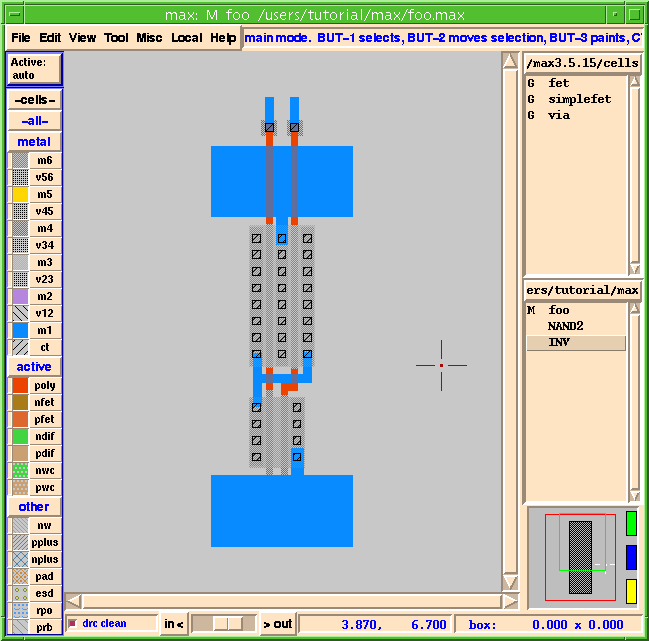
- If the top of the M1 wires are not aligned as shown in Figure 18, there are a number of ways to align them.
- You can also use the
Fillcommand in theEditmenu to extend both top edges of the M1 wires up. (Refer to the Micro Magic Tools MAX User Guide for more details.)
Erasing Layers
- We are getting ready to finish this cell and your boss has just informed you that the power rails have been changed from M1 to M2.
- MAX allows you to selectively erase layers.
- Like the painting function, erasing works from both the palette and by clicking on the layer in the actual layout.
- You will notice that the box is not the correct size.
- We're now going to erase the M1 a third way.
- Once you have erased the M1 layer, notice that your box is exactly the size it needs to be for the M2.
- There are several ways to accomplish what you just did. For example, rather than drawing a box around the M1 power lines - which also selects the poly crossing over it - you could click the left mouse button (Button-1) over the M1 power line to select it. Once selected, hit the Delete key to delete the selected item.
- There are several options for mouse selection.
- Once you have selected the layer, rather than delete it and replace it with another layer, you can also use the nifty little
Change Layerfeature found inEdit Properties...under theEditmenu.
- Change the lower (GND) M1 and replace it with M2.
- Now go ahead and attach the power and ground lines to the new M2 straps.
- To do this, use the wire mode.
- Select the two
ct_polygcells and the two pieces of M1 using Shift-Button-1 to add to the selection, as shown in Figure 19.Figure 19: Selected Poly Gcells And M1 Wires
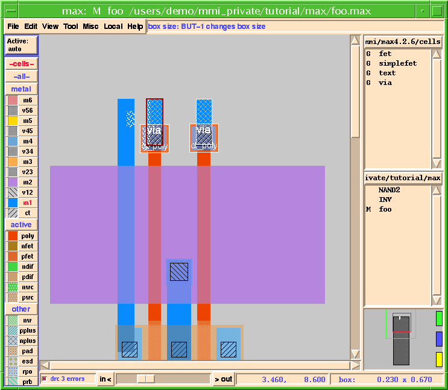
- You could also jog the M1 output, or the poly lines going under the M2 as well. It's up to you.
- However you do it, your design should now be DRC correct and look similar to Figure 20.
Figure 20: Nand Gate Wired Up
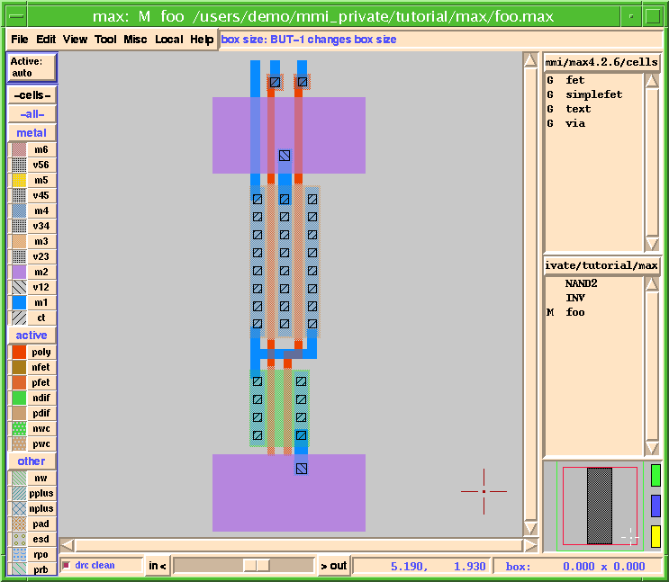
Text
- There is one last thing before we are finished with our Nand gate.
- The input and output nets of the Nand gate should be marked with unique names. This is accomplished by adding Text to the nets.
- To add Text, you first select the paint rectangle where you want to put Text. Simply click the left mouse button (Button-1) on the piece of paint, which will select the paint rectangle and place the Box around it. The new Text will be positioned in the middle of the paint rectangle. Or, to position the Text elsewhere, use the left mouse button (Button-1) to drag a small box over the paint at the location where you want the Text.
- The
MAX Text Editdialog box permits you to set the type of Text label: input, output, and so forth. Marking labels as inputs, outputs, global, etc. can be useful for use with other extraction or routing tools.
- You can also specify the Text "position", such as n for north, or s for south. Specifying the orientation of the Text, relative to the crosshair that marks the Text location, places it on one side or another for easier viewing. The Text "type" can be a point (the default) or a box. The `box' option produces text which marks a specified area, but is rarely used.
Figure 21: Adding Labels
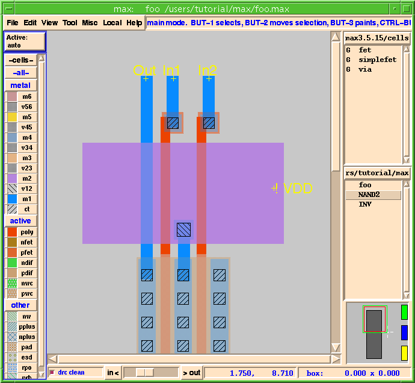
- At this point our little NAND gate example should be done, and yours should look something like Figure 22.
Figure 22: Finished Nand Gate
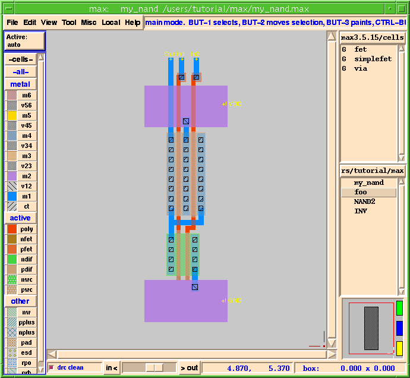
- You can copy the cell into a new name. Let's call it
my_nand.
- You will now see both
fooandmy_nandin the List box. You are currently editingmy_nand.
Selecting Nets
- MAX can trace connectivity through vias and contacts to interactively show everything connected to a net. Place the mouse over any piece of metal, poly or diffusion and type s, or choose
Select Netfrom theMiscmenu. MAX will automatically select the entire net that is connected to that piece of paint, and will also display the net name, if known, in theMAX Message Area. The net name(s) are taken from any Text (labels) attached to the net.
- Type the s
hotkey. You should now see the net highlighted as in Figure 23.Figure 23: Highlighted Net
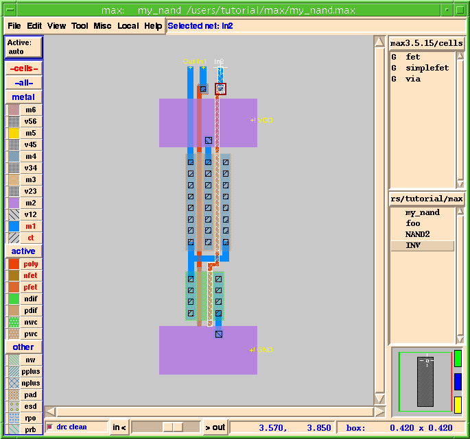
- If there are multiple layers under the mouse cursor, you type s multiple times to cycle through the nets.
- One nice feature often used for debugging is that, when MAX selects a net, the name of all of the text labels on that net are displayed in the
MAX Message Area(at the top, just to the right of the menus). For example, if you selectVDDand the namesVDDandGNDboth appear, you know you have a problem.
- MAX can also check to make sure you don't accidently connect two nets with the wire tool whhich have different net names. If your nets have text on them at the level of hierarchy you're editing, you will get a warning when connecting them.
- To use this feature, it needs to first be turned on. Type the hotkey Shift-w. You should see the popup menu shown in Figure 24.
Figure 24: Wire Menu Warning Popup
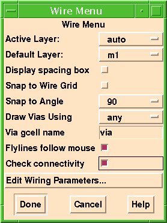
- Notice that the wire does get drawn, even thought it creates a short. The MAX methodology is to warn you if you're creating DRC or LVS errors, but still allow you to create that layout.
Advanced Selecting, Duplicating, And Renaming
- Let's look at a few more advanced selection techniques before we go on.
- Under the
Editmenu there are a few other interesting items.
- We already know that we can select pieces of layout by:
- To select a cell rather than some paint or an object:
- It easier to use the f hotkey instead of the menu item for the
Select Cellcommand because it uses the mouse cursor location to select cells.
- The
Probecommand is another way to see what layers and objects are under a particular point.
- You could also choose
Probefrom theMiscmenu, then point at the location you want to probe. TheSelection Probemenu that appears contains a list of all the layers and objects under that point.
- To select a paint rectangle or other object, click on it in the popup with mouse Button-1. To deselect it, click again. By default, only items in the current edit cell are displayed, since those are the only ones you can effectively manipulate. But if you choose the
All Expanded Cellsradio-button, the list will contain everything in any cell under the point where you probed.
- Another way of duplicating layout is by using the
Copy Cell Buffercommand in theFilemenu. This command will copy the current cell buffer to a new cell buffer in memory. The new cell will be saved to disk when youSavethe cell (from theFilemenu.) TheSave Ascommand (also in theFilemenu) is similar toCopy Cell Buffer, but also immediately saves the cell to disk. In fact, theCopy Cell Buffercommand was used to create an Inverter cell (INV.max) from theNandcell we just finished, and theSave Ascommand was used to save cellfooasNand.max.
- If you are working on a cell and want to discard its contents, perhaps to completely replace it with another cell, you can use the
Delete Cell Buffercommand (under theFilemenu) to delete the in-memory copy of a cell. This command does not affect the file on disk.
| ----- Micro Magic ----- |